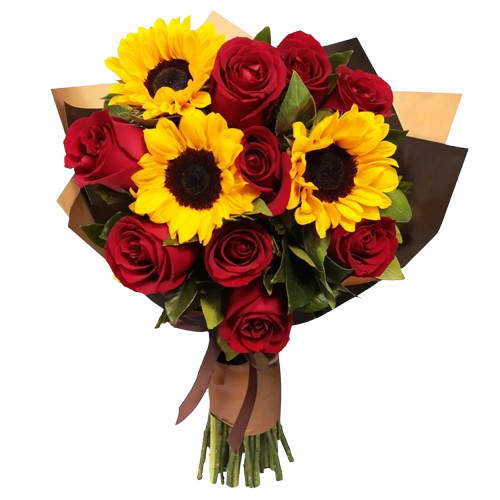
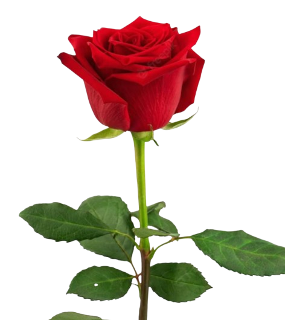
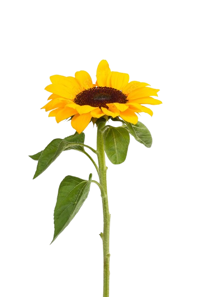
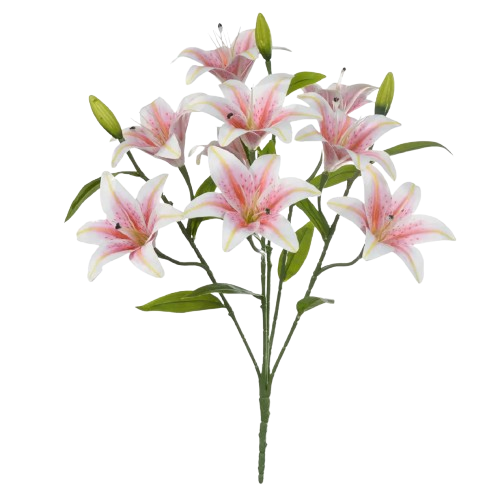

Algumas pessoas são como flores raras em um jardim. Elas tornam o mundo mais bonito, mais leve e cheio de significado. Este pequeno espaço é uma homenagem à força, à delicadeza e à luz que vocês carregam dentro de vocês.
Julia Silva representa amor, coragem e dedicação. Como um girassol que sempre busca a luz do sol, ela ilumina a vida de todos ao seu redor. Uma mulher forte, inspiradora e cheia de luz.
Jullie Nunes é como uma rosa em um jardim especial: delicada, cheia de vida e com uma beleza única. Filha de uma mulher incrível, ela carrega dentro de si sensibilidade, força e muita luz.




Julia Silva e Jullie Nunes, Este site nasceu de um sentimento muito verdadeiro: admiração. Admiração pela força que vocês carregam, pela delicadeza que existe em cada gesto e pela forma única com que enfrentam a vida todos os dias. Existem pessoas que passam pela vida de forma comum… Mas existem pessoas como vocês, que deixam marcas, que inspiram, que ensinam com atitudes, com coragem e com o coração. A força de vocês não está apenas nas batalhas que já enfrentaram, mas também na forma linda e humana com que continuam caminhando, mesmo quando a vida exige mais do que parece justo. Vocês são como um jardim que mistura rosas e girassóis. As rosas representam a beleza, a delicadeza e o amor que vocês espalham. Os girassóis representam a força, a luz e a capacidade de sempre buscar o sol, mesmo depois dos dias difíceis. E é exatamente isso que faz vocês serem tão especiais. Que a vida continue florescendo ao redor de vocês, trazendo novos sonhos, novos sorrisos e novas histórias bonitas para viver. Porque mulheres como vocês não apenas vivem… elas inspiram, iluminam e transformam o mundo ao redor. Com muito carinho, respeito e orgulho. 🌹🌻✨